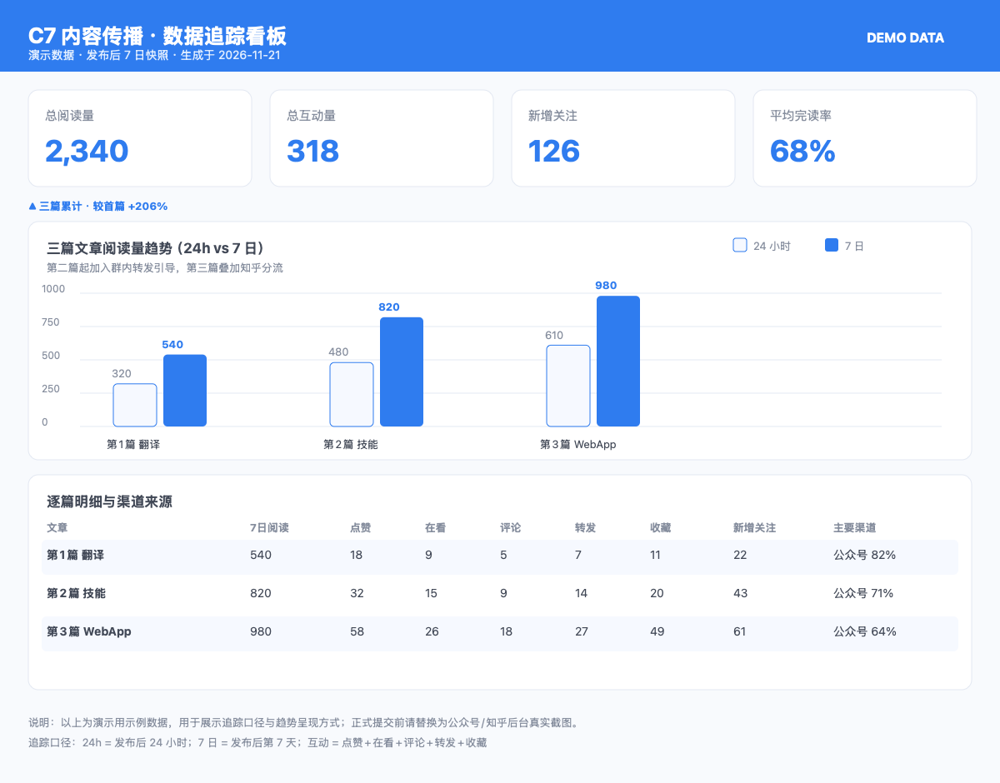
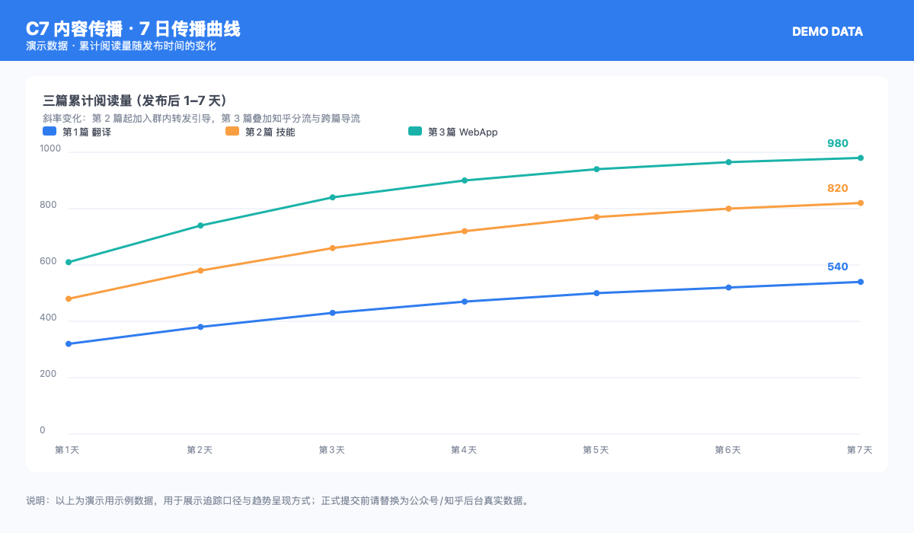

普通人用 AI 做出东西的 90 天 —— 3 篇系列文章 · 双平台策略 · 数据追踪 · AAR 复盘
五步流水线、结构化提示词、三轮校对法；公开术语漂移/公式损坏/漏译三个坑的解决办法。
砍掉 80% 功能反而有人用；4 次提示词迭代、7 项技能设计清单、信任来自「可核验」。

7 日数据快照 KPI + 柱状图 + 逐篇明细，标注统一追踪口径

7 日传播曲线 三篇累计阅读增长趋势，用于验证「逐篇递增」假设
| 文件 | 核心内容 |
|---|---|
| 赵心皓_C7_AI日志.md | 8 阶段工作流、6 轮 Prompt 迭代（v1→v2→v3）、优化规律表、AI 使用边界 |
| 赵心皓_C7_AAR复盘.md | 计划 vs 实际、5 个问题根因、4 条失败经验、3 条洞察、7 项改进方案 |
| 赵心皓_C7_拿来说明.md | 9 项参考来源与改造方式，明确「拿来结构、不拿内容」 |
| 赵心皓_C7_文章链接与摘要.md | 平台链接位 + 一句话摘要 + 3 段群内分享话术 |
| md2wechat.py | Markdown → 公众号 HTML 转换器（纯标准库，C4 联动可复用工具） |
| 维度 | 满分 | 得分带 | 核心证据 |
|---|---|---|---|
| 内容质量 | 25 | 3 篇文章 + 3 张配图 + 10 候选标题 | |
| 传播设计 | 20 | 渠道矩阵 / 3 周节奏 / 互动钩子 / 追踪口径 | |
| 产物完整性 | 15 | 文章/HTML/截图/日志/说明/README/脚本 | |
| AI 使用质量 | 20 | 8 阶段 / 6 轮迭代 / prompt 优化表 | |
| 复盘质量 | 20 | 5 问题 / 4 失败 / 3 洞察 / 7 改进 |